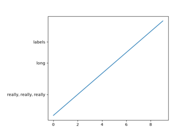
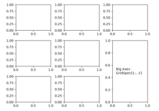

Subplots, axes and figures#


Programmatically control subplot adjustment
Programmatically control subplot adjustment


Controlling view limits using margins and sticky_edges
Controlling view limits using margins and sticky_edges



Combine two subplots using subplots and GridSpec
Combine two subplots using subplots and GridSpec